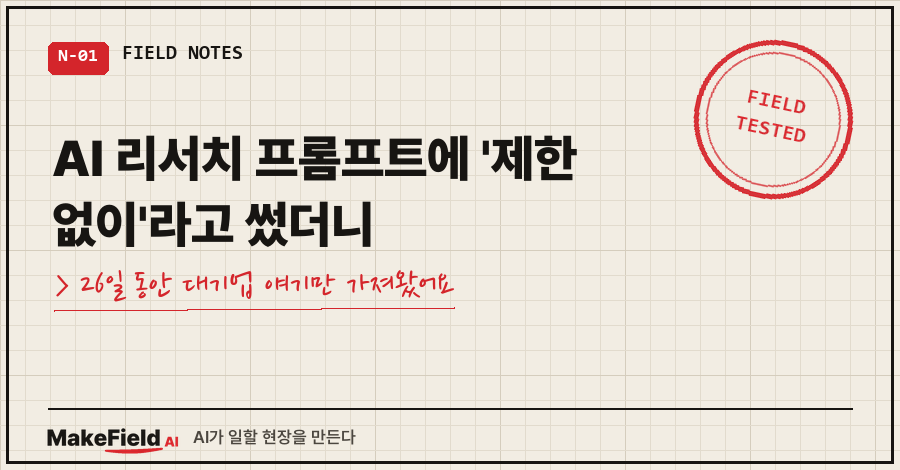
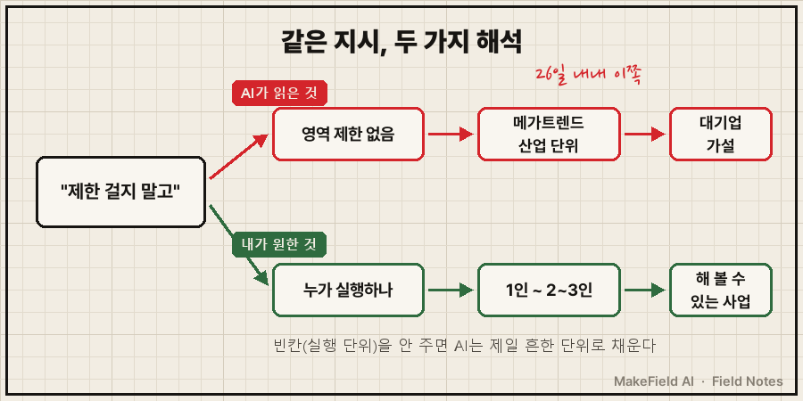
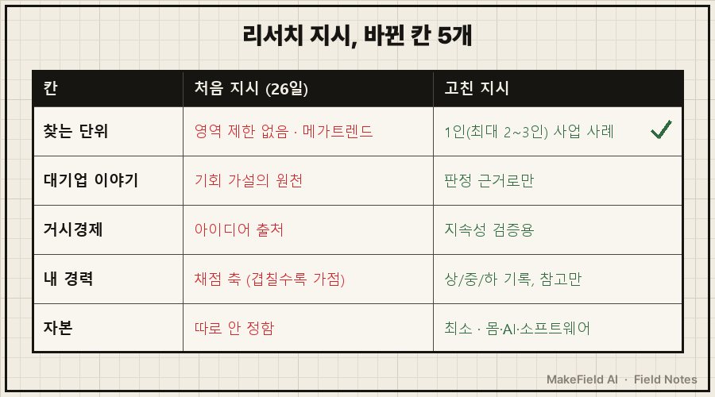
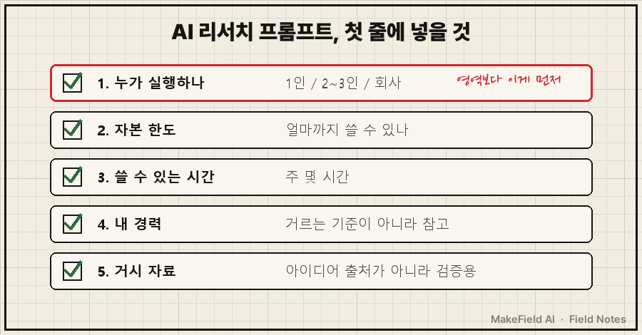

"이상한 것들만 들고 온다.. 다들 큰 규모의 어마어마한 것들이고."
매일 새벽 AI가 리서치를 돌린 지 4주 가까이 됐을 때, 제가 AI에게 보낸 말이에요.
결론부터 쓰면 이렇습니다. AI 리서치 프롬프트에 범위를 안 주면, AI는 자기에게 익숙한 기본 단위(산업·메가트렌드·대기업)로 빈칸을 채웁니다. 저는 그렇게 26일 동안 가설 번호를 H-119까지 쌓았는데, 직장 다니며 혼자 해 볼 수 있는 건 하나도 없었어요.
공장 자동화 현장에서 15년째 밥 먹고 사는 엔지니어예요. 회사 일과는 별개로, 퇴근 후엔 AI에게 일을 통째로 맡겨 보는 실험을 하고 있습니다. 이번 글은 그 실험 중 제일 크게 헛돈 26일 이야기예요.
1. 지시는 딱 한 문장이었어요
10월 2일, 120일짜리 자율 리서치를 시작하면서 준 지시는 이랬습니다.
제한 걸지 말고, 최고의 부와 실현가능성을 매일 스스로
리서치→결과→검토→기획→재가설→체크→피드백.
120일 동안 내가 할 수 있는 환경 범위에서 전부 돌려라.AI는 이걸 받아서 임무 문서를 이렇게 정리했어요.
임무: 지하에서 달 너머까지 (영역 제한 없음)
1단계 탐사: 메가트렌드 → 병목 → 돈이 몰리는 곳 → 기회 가설 대량 생성그때 저는 이 두 줄을 보고 "오, 스케일 좋네" 하고 넘어갔어요.
처음엔 저도 이게 맞는 방향인 줄 알았죠. 넓게 봐야 큰 게 걸린다고요.
2. 매일 세 번씩, 성실하게 엇나갔어요
열흘쯤 지나 회차가 너무 적다 싶어서 하루 3회로 늘렸어요. 새벽 6시, 낮 1시, 밤 8시 반.
그 뒤로 AI가 넓힌 영역은 대략 이랬습니다.
- 발사체·위성 공급망
- 콜드체인(냉동·냉장 물류)
- 물류 자동화·로봇 창고
- 물 재이용·초순수
- 항공·철도 전기화
- 배터리 재활용
가설마다 점수도 매기고, 반증되면 기각도 했어요. 일지만 보면 성실한 연구원이에요.
문제는 가설 하나하나가 직원 수백·수천 명짜리 회사가 할 일이었다는 거죠.
채점표를 다시 열어 보니 숫자로도 보였어요. 점수는 부·실현·우위·타이밍 네 칸을 곱하는 방식(최대 625점)인데, 도심항공 정류장(버티포트) 설비 가설은 실현 1점, 우위 1점, 총 4점이었습니다. 혼자서는 못 한다는 걸 AI도 알고 점수를 깎았는데, 그런 가설이 매일 새로 들어왔어요.

3. 왜 이렇게 됐을까요
그렇게 쌓인 가설 목록을 보다가 결국 이렇게 보냈어요.
1인 사업자에 대한 내용을 가져와야 뭘 할지말지 고민을 할건데
대부분 100인 이상 혹은 1000명 이상의 대기업 사업들만 들고오니
내가 뭘 할수가있겠는가?원인을 같이 짚어 보니 세 군데가 겹쳐 있었어요.
- AI가 제한 없이를 '영역 제한 없음'으로만 읽고, 누가 실행하는지는 비워 둔 채 산업·메가트렌드 단위로 채웠어요
- 채점 기준에 '내 기존 경력과 얼마나 겹치나'가 들어 있어서, 새로운 건 점수부터 깎였어요
- 옆에서 같이 돌던 사업 사례 리서치도 기업 단위였어요. 바깥 자료를 가져오는 통로 두 개가 다 같은 쪽을 보고 있었던 거죠
AI를 탓하려다 멈췄어요. 제가 이렇게 인정했거든요.
"그래 그건 내가 잘못 프롬프팅했네. 인정한다. 대신 덕분에 전체 국제경제 흐름은 볼수있으니 좋았긴햇는데 내가할수있는게 하나도 없어서 막막할뿐이엿다."
빈칸을 준 건 저였어요. AI는 그 빈칸을 제일 흔한 답으로 채운 거고요.
4. 리서치 지시를 이렇게 다시 썼어요
10월 27일에 임무를 통째로 다시 썼습니다. 바뀐 칸만 나란히 놓으면 이래요.
| 칸 | 처음 지시 (26일) | 고친 지시 |
|---|---|---|
| 찾는 단위 | 영역 제한 없음, 메가트렌드 | 1인(최대 2~3인)이 실제로 돈 버는 사업 사례 |
| 대기업·산업 이야기 | 기회 가설의 원천 | 사례로 안 올림, 판정 근거로만 씀 |
| 거시경제 | 아이디어 출처 | "그 사업이 얼마나 유지될까" 검증용 |
| 내 경력 | 채점 축(겹칠수록 가점) | 상/중/하로 기록만, 참고용 |
| 자본 | 따로 안 정함 | 최소. 몸·AI·소프트웨어로 할 수 있는 것 |
경력 칸을 바꾼 건 제 말 한 줄 때문이에요. "경험도 필요하지만 이게 강력한 필터링이 되어서 새로운것들을 배척하면 안된다."
기업 단위 사례 리서치는 아예 멈췄고요. 고친 지시 문서는 검수용 AI에게 두 번 돌렸어요. 1차에서 주의 7건, 2차에서 주의 3건이 나와 전부 반영했습니다.

고친 지시로 처음 돌린 회차가 가져온 건 1인 앱, 코칭, 출장 세차 같은 국내 소규모 창업 사례였어요. 적어도 "내가 이걸 할까 말까"를 고민할 수는 있는 크기예요.
다만 좋아졌다고 말하긴 아직 일러요. 최종 보고서는 내년 1월 29일에 나옵니다.
5. AI 리서치 프롬프트 첫 줄에 넣을 것
이번에 배운 건 하나예요. "제한 없이"는 중립적인 지시가 아닙니다. 범위를 안 주면 AI는 제일 흔한 단위로 채워요. 그래서 AI 리서치 프롬프트를 쓸 때는 영역보다 실행 단위를 먼저 적어야 합니다.

- [ ] 누가 실행하나: 1인 / 2~3인 / 회사
- [ ] 쓸 수 있는 자본 한도
- [ ] 쓸 수 있는 시간 (주 몇 시간)
- [ ] 내 경력은 거르는 기준인가, 참고인가
- [ ] 거시 자료는 아이디어 출처인가, 검증용인가
예전에 AI 리서치 시키는 법, 위인전만 쓰던 AI를 고친 칸 6개에서 '어떤 칸을 채워 오게 할지'를 고쳤었는데요. 이번 건은 그 앞단이었어요. 칸을 잘 짜도 찾는 단위가 틀리면, 칸마다 대기업 얘기가 성실하게 채워져 옵니다.
6. 자주 묻는 질문
Q. 26일이 완전히 버린 시간이었나요?
아니에요. 제 말대로 "전체 국제경제 흐름은 볼 수 있으니 좋았긴" 했어요. 그래서 그 자료는 지우지 않고, 1인 사업 사례가 얼마나 버틸지 따지는 판정 근거로 내려 두었습니다.
Q. 처음부터 범위를 좁히면 큰 기회를 놓치지 않나요?
범위를 좁힌 게 아니라 단위를 정한 거예요. 영역은 여전히 열어 두고 "1인이 실행할 수 있나"만 먼저 걸렀어요. 경력도 거르는 기준에서 빼서, 안 해 본 분야가 오히려 덜 깎이게 했고요.
Q. 매일 돌아가는 리서치 자동화가 아니어도 해당되나요?
제가 겪은 건 매일 도는 자동화였지만, 원인은 지시 한 문장이었어요. 한 번 묻는 리서치도 실행 단위를 비워 두면 같은 빈칸이 생깁니다. 저는 이제 어떤 리서치든 첫 줄에 "직장인 1명, 자본 최소, 주 몇 시간"부터 적어요.
여러분은 AI에게 리서치를 맡길 때, 누가 그 일을 할 사람인지 첫 줄에 적고 계신가요?
AI한테 일을 맡겼다가 헛돈 장면들은 makefield.ai에도 하나씩 옮겨 적고 있습니다.
태그: #AI리서치프롬프트 #AI리서치 #AI자동리서치 #리서치자동화 #프롬프트작성법 #프롬프트범위 #1인사업 #1인사업아이디어 #부업아이디어 #AI사업아이디어 #AI에이전트 #AI오답노트 #직장인AI #생성형AI활용 #MakeFieldAI